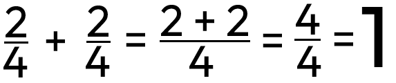

Sčítání
Zlomky se stejným jmenovatelem
Zlomky s různým jmenovatelem
Počítají se skoro stejně jako zlomky se stejným jmenovatelem, ale musí se převést (rozšířit, zkrátit) na stejného jmenovatele.
Počítají se skoro stejně jako zlomky se stejným jmenovatelem, ale musí se převést (rozšířit, zkrátit) na stejného jmenovatele.